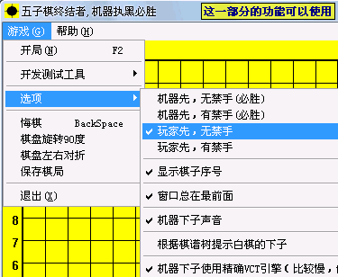
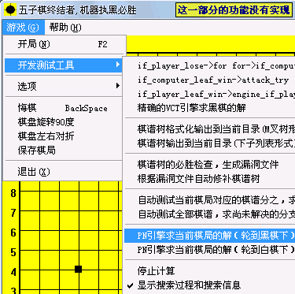
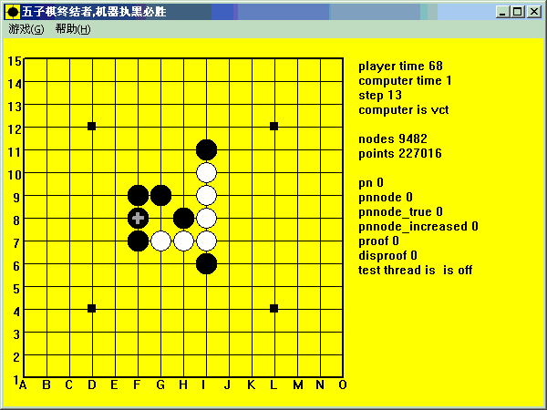

五子棋终结者1.0正式版 特别版
#1 五子棋终结者1.0正式版 特别版 作者：吾本沉默 发表时间：2007-8-11 14:50:32
只是解决了玩家可以先出棋的限，“开发测试工具”选项目那里的功能还是没有实现


［ 有志青年 于 2007-8-11 18:11:40 时奖励此帖[金币加 20 威望加1］
#2 Re:五子棋终结者1.0正式版 特别版 作者：吾本沉默 发表时间：2007-8-13 8:12:35
再增加一个，好象比上面那个更好些。 五子棋终结者1[1].0正式免验证版.rar
五子棋终结者1[1].0正式免验证版.rar
#3 Re:五子棋终结者1.0正式版 特别版 作者：gerbo 发表时间：2007-9-2 22:46:32
怎么注册啊?没注册的无法支持玩家先有禁的~!谁提供注册码,拜求了
#4 Re:五子棋终结者1.0正式版 特别版 作者：albert 发表时间：2007-9-9 17:18:42
virus???
#5 Re:五子棋终结者1.0正式版 特别版 作者：蜗牛 发表时间：2007-9-15 14:59:32
能用吗？？？
#6 Re:五子棋终结者1.0正式版 特别版 作者：蜗牛 发表时间：2007-9-16 8:10:51
还是 终结者好 比较快 不过 终结者 玩白棋 还真够 恶心的 就黑棋 厉害！～#7 Re:五子棋终结者1.0正式版 特别版 作者：yjr123 发表时间：2007-9-17 7:14:41
虽然选择了有禁，但电脑执黑仍然按照无禁来下，已破解是假的。#8 Re:五子棋终结者1.0正式版 特别版 作者：星尘 发表时间：2007-11-12 16:43:37

破解无效，不认禁手。
#9 Re:五子棋终结者1.0正式版 特别版 作者：mxl800 发表时间：2007-12-5 16:48:01
有禁手，计算机执黑根本不是必胜！#10 Re:五子棋终结者1.0正式版 特别版 作者：笨蛋020 发表时间：2007-12-8 19:36:35
狗屎软件，臭名昭著
#11 Re:五子棋终结者1.0正式版 特别版 作者：samaki 发表时间：2008-3-18 0:06:55
这东西太弱了#12 Re:五子棋终结者1.0正式版 特别版 作者：虚无 发表时间：2008-4-1 15:38:25
188的软件~#13 Re:五子棋终结者1.0正式版 特别版 作者：小辉 发表时间：2008-4-5 9:09:02
我的哪个只有一个功能 就是黑先下 嘿嘿 这下好了